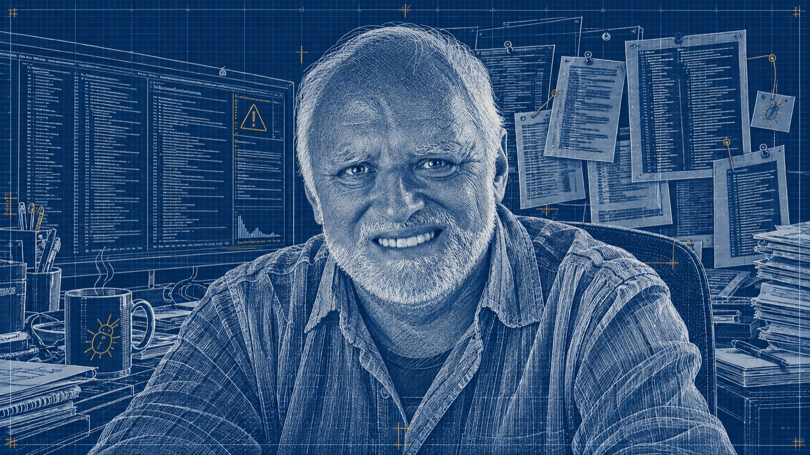

git blame, Android и iOS. Сегодня v4.4.5 — дальше про то, из чего он собранMCP fast-path → fetcher-агент → REST → ручной ввод. Отвалился верхний — работает следующий, на входе по-прежнему один issue ID. v4.2.0 → 4.4.4validate-report.py — те же 14 полей в сто раз быстрее и за ноль токенов. Один и тот же отчёт всегда даёт один и тот же вердикт. v4.3.0git blame, есть ли файл с автором и коммитом и т.д. Модель может уверенно написать вывод, не сходив ни в один файл — скрипт видит, что она туда не ходила. v4.3.0 → 4.4.5pass, fail и null. Поля нет — режет скрипт. Поле есть, но выглядит отпиской — needs_review, и дальше решает модель. v4.4.3def chk_executed_commands(sections):
s = find_section(sections, 'executed_commands')
return 'OK' if s and re.search(
r'git\s+(?:blame|log|ls-tree)', s) else 'MISSING'
if has_critical or ok < 12:
pass_val = False # режет скрипт
elif needs_review:
pass_val = None # решает модель
else:
pass_val = True
БУДУТ ВОПРОСЫОБРАЩАЙТЕСЬ